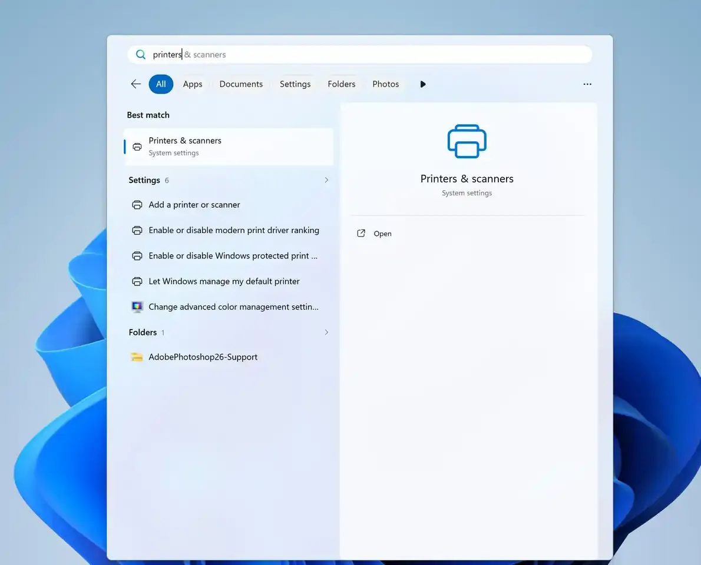
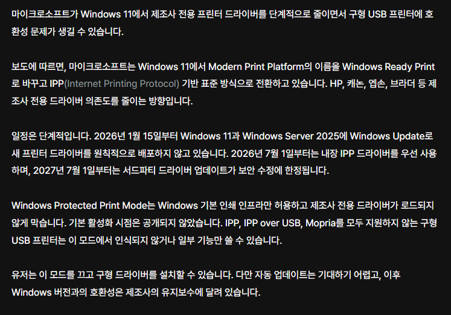

윈도우에 기본 내장되었던 MPP(모던프린터플랫폼)를 WRP(윈도우레디프린터)로 변경하고 IPP 즉, 네트워크 프린팅을 표준으로 한다고함.
한마디로 제조사들의 전용 드라이버를 줄여버리겠다는거임.
문제는 WRP로만 설치를 허용하고, 제조사 드라이버를 별도로 설치해서 윈도우에 로드하는걸 막을거라함.
이러면 네트워크 프린팅을 지원하지않는 구형 프린터의 경우 기능이 제한되거나 프린터 인식이 안될수도있음.
사용자가 이 모드를 끄고(드라이버 보안해제도 해야함) 구형 드라이버를 설치할 수 있지만, 그럴경우 윈도우 업데이트 될때마다
드라이버를 재설치 해야하거나, 아니면 못쓰는 경우도 발생할듯.
한줄요약 : 윈7 드라이버 강제로깔아가면서 프린터 하는 좆소 사무실....은 윈11 안쓸려나?
별도 설치를 막는다고? 제정신이냐 ㅋㅋㅋㅋㅋㅋㅋㅋ
아무리 감가가 끝났어도
돌아가기만 하면 계속 쓰는게 회사 프린터인데
쟤넨 애미 뒤진 짓을 하고 있네